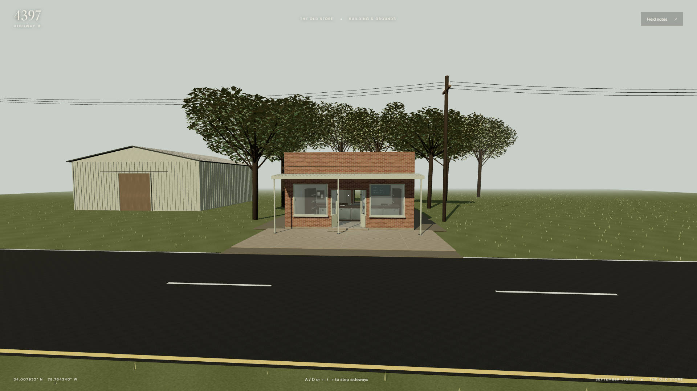
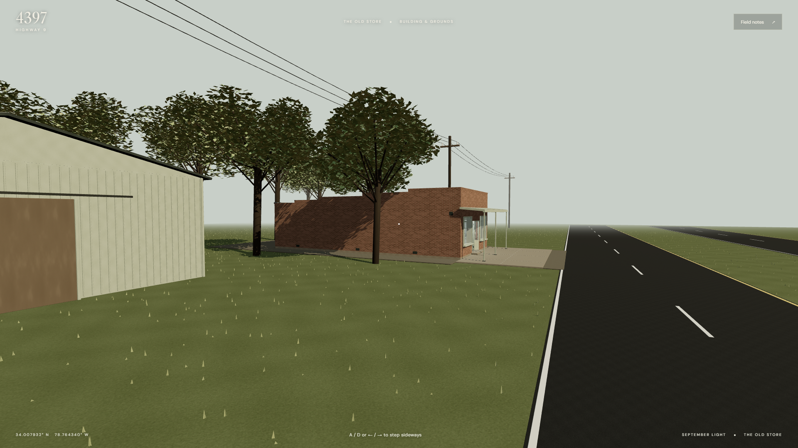
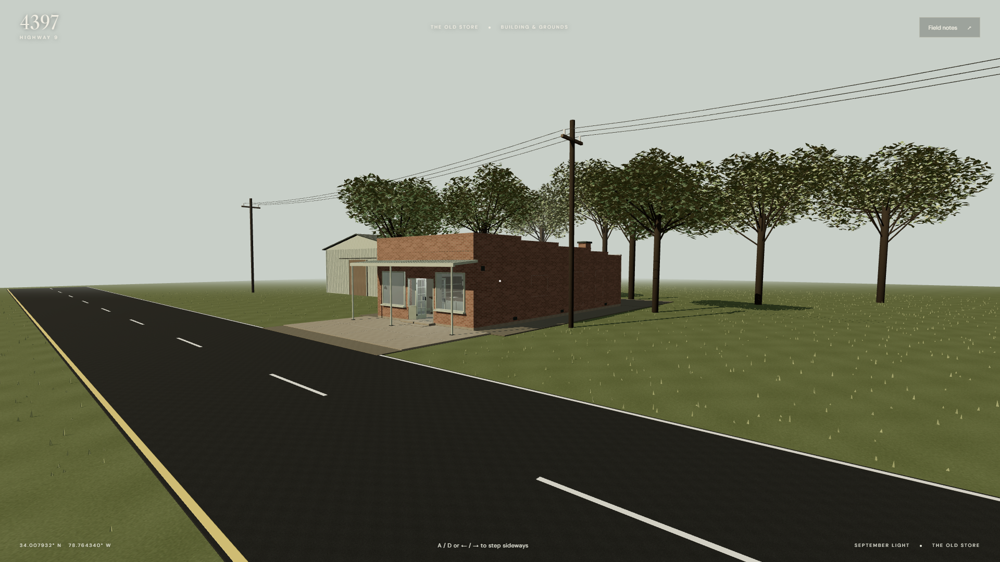

298,883 source triangles · 99 render meshes · 13.33 MB GLB · 33.3 MiB conservative texture estimate
Room-by-room and site review
Interior furnishings and undocumented site details are imagined. The researched exterior and approved M3 arrangement remain the basis. Independent room switching and full opening controls are M5 work.
Exterior evidence comparisons
Original reference screenshots retain their attribution. Compare the facade openings, canopy, stepped parapets and chimney. Site distances and vegetation are contextual estimates.
Front
 Original Google reference, unchanged; see M1 for image dating
Original Google reference, unchanged; see M1 for image dating
M4 browser view; approximate corresponding viewpoint, not a solved camera matchFront left
 Original Google reference, unchanged; see M1 for image dating
Original Google reference, unchanged; see M1 for image dating
M4 browser view; approximate corresponding viewpoint, not a solved camera matchFront right
 Original Google reference, unchanged; see M1 for image dating
Original Google reference, unchanged; see M1 for image dating
M4 browser view; approximate corresponding viewpoint, not a solved camera matchVerification records
Chrome interaction regression · Full-scene navigation and performance · Edge verification · Asset inventory · Entrance mesh clearance